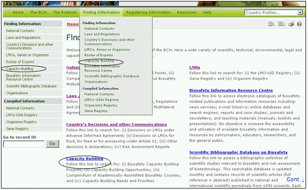
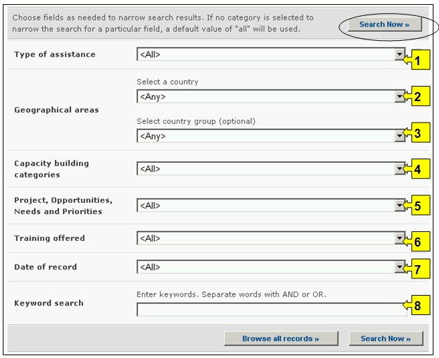
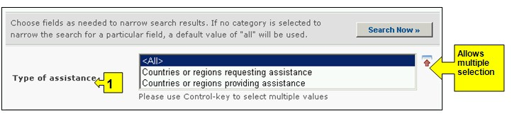
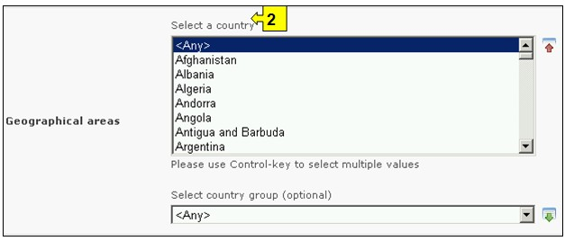
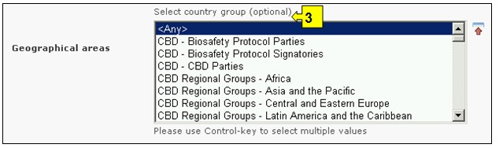
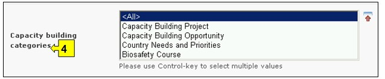
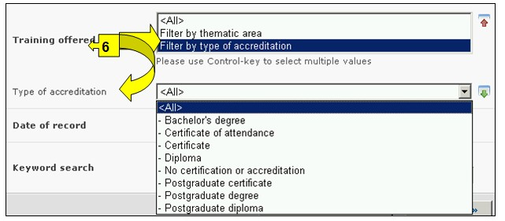
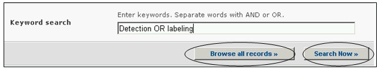
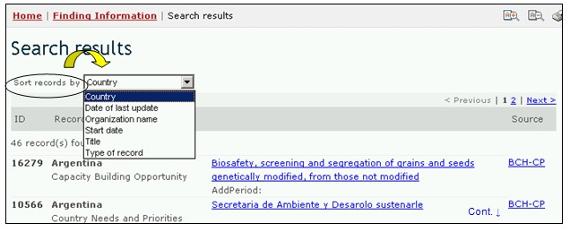
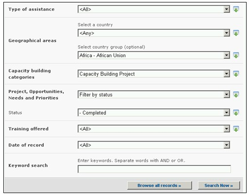

عنوان الموقع على الشبكة: http://bch.cbd.int/database/activities/
تُطالب الأطراف بمقتضى المادة 22 بالتعاون على تطوير و/أو تعزيز الموارد البشرية والقدرات المؤسسية في مجال السلامة الأحيائية بغرض فعالية تنفيذ البروتوكول. وتستطيع الأطراف وآخرون، من خلال غرفة تبادل معلومات السلامة الأحيائية، الحصول على المعلومات بشأن بناء القدرات وغير ذلك من المساعدات اللازمة لتنفيذ البروتوكول. إضافة إلى ذلك، تستطيع الحكومات تسجيل احتياجاتها وأولوياتها الخاصة ببناء القدرات لدى البوابة المركزية لغرفة تبادل معلومات السلامة الأحيائية. وترسل هذه المعلومات إلى الحكومات المانحة.
ويمكن النفاذ إلى عملية البحث من أجل الحصول على معلومات عن بناء القدرات من خلال الوصلة بشأن قائمة الاختيارات المنسدلة والخاصة بإيجاد المعلومات شريط التصفح، أو من الوصلة في قائمة الاختيارات إلى اليسار في صفحة إيجاد المعلومات، أو من الوصلة في نص بناء القدرات على الصفحة ذاتها.

صورة 68
وفي الصفحة ابحث عن المعلومات بشأن بناء القدرات، يستطيع المستعمل أن يبحث عمّا يلي:
1. مشاريع بناء القدرات في مجال السلامة الأحيائية؛
2. الفرص في مجال بناء القدرات؛
3. خلاصة وافية عن الدورات الدراسية المعتمدة أكاديمياً في مجال السلامة الأحيائية؛
4. الاحتياجات والأولويات في مجال السلامة الأحيائية.
وفي الصفحة الخاصة بالبحث عن المعلومات بشأن بناء القدرات وتوجد ستة أُطُر لمعايير البحث مقدَّمة من أجل تنقيح عمليات البحث في قاعدة البيانات هذه. ولكل واحد منهم هنالك قائمة منسدلة تسمح باختيار المعايير المطلوبة. التركيب الاجمالي لقائمة الخيارات المنسدلة هي الفقرة الاولى على رأس قائمة الخانة. الزر الموجود على جهة اليمين من كل اطار يسمح للمستخدم بتفعيل عدة اختيارات. عندما يكون المستخدم في اسلوب الاختيارات المختلفة، من الممكن ان يضاف معايير مختلفة للاختيارات من خلال الضغط على المعيار المناسب والضغط على مفتاح (Ctrl).
وتوجد ثمانية أُطر لمعايير البحث في هذه الصفحة.
.
صورة 69
الإطار 1 { نوع المساعدة} يسمح للمستعمل بأن يختار البلدان أو المناطق التي تطلب أو تقدم مساعدة.

صورة 70
الإطار 2 {اختر بلد} يتضمن جميع أسماء البلدان في قائمة اختيارات منسدلة، لكي يستطيع المستعملون البحث عن المعلومات من بلد محدّد.

صورة 71
الإطار 3 {اختيار مجموعة بلدان} يسرد مجموعات البلدان في قائمة اختيارات منسدلة ليتسنى للمستعملين اختيار مجموعة محددة من البلدان من أجل إجراء بحث. قائمة مجموعة البلدان تتضمن اهم المجموعات الجغرافية و السياسية للبلدان وتسمح لتضييق نطاق البحث بالسجلات المقدمة من قبل اعضاء المجموعة/المجموعات المختارة.

صورة 72
الإطار 4 {فئة بناء القدرات} يسمح للمستعمل بتضييق نطاق البحث على فئات محددة من بناء القدرات مثل مشاريع بناء القدرات؛ فرص بناء القدرات؛ احتياجات وأولويات البلدان، دورات دراسية في مجال السلامة الأحيائية.

صورة 73
الإطار 5 {مشاريع، فرص، احتياجات واولويات} يسمح للمستخدم تطبيق برامج ترشيح للمعالجة (Filters) تحت عنوان المشروع، الفرصة والاحتياجات والأولويات. واختيار برنامج ترشيح للمعالجة (Filter) من قائمة اختيارات منسدلة يفتح إطاراً إضافياً للبحث مع قائمة اختيارات منسدلة بها خيارات متصلة ببرنامج المعالجة المختار. فئات برامج ترشيح معالجة: (أ) اسم المشروع، (ب) بناء القدرات، (ج) وضع المشروع، (د) نوع الجهة المنفذة، (ه) المنظمات و (و) الجهة المانحة.
اختيار معيار او اكثر لبرامج الترشيح من القائمة المنسدلة تفتح اطارات بحث اضافية مع قائمة منسدلة من الحيارات، كل واحد متعلق لواح من برامج الترشيح المختارة. عندما يكون المستخدم في اسلوب الاختيارات المختلفة، من الممكن ان يضاف معايير مختلفة للاختيارات من خلال الضغط على المعيار المناسب والضغط على مفتاح (Ctrl).

صورة 74
الإطار 6 {التدريب المقدم} يسمح للمستخدم تطبيق برنامج الترشيح للحصول على قائمة بالتدريب المعروض، ويمكن تصفية القائمة حسب المجال المواضيعي أو نوع الاعتماد
اختيار معيار او اكثر لبرامج الترشيح من القائمة المنسدلة تفتح اطارات بحث اضافية مع قائمة منسدلة من الحيارات، كل واحد متعلق لواح من برامج الترشيح المختارة. عندما يكون المستخدم في اسلوب الاختيارات المختلفة، من الممكن ان يضاف معايير مختلفة للاختيارات من خلال الضغط على المعيار المناسب والضغط على مفتاح (Ctrl).

صورة 75
الإطار 7 {تاريخ السجل} يسمح للمستعمل بأن يضيق نطاق البحث إلى التاريخ الذي أُدخل فيه السجل في قاعدة بيانات غرفة تبادل معلومات السلامة الأحيائية. وتعرض قائمة الاختيارات المنسدلة عدداً من الخيارات لتحديد البحث بالسجلات التي تم تقديمها بالمهلة الزمنية المحددة (على سبيل المثال "اليوم الفائت، الشهر الفائت، السنة الفائتة، الخ).

صورة 76
الإطار 8 {بحث الكلمة الدليلية} ايُعرض فرصة لاستخدام الكلمات الدليلية لتضييق نطاق البحث. ويستطيع المستعمل أن يستخدم تكوين جملة الكلمات الدليلية المعيارية (و/أو) للبحث مع استخدام عدة كلمات أو أجزاء أساسية من الكلمات (استيراد أو تصدير). البحث الذي يستخدم الكلمات الدليلية يصدر نتائج بالسجلات التي تتضمن النص الذي يتم البحث عنه فقط وليس المفردات التي لم يتم ادخالها (على سبيل البحث عن "الذرة" ينتج قائمة بالسجلات التي تحوي فقط كلمة "الذرة" ولكن ليس "Corn" أو "Zea mays").

صورة 77
ويوجد في أسفل آلية البحث ثلاث ازرار لانتاج قائمة بالسجلات. ويسمح زر ابحث الآن Search Now للمستعمل بأن يشغّل برنامج بحث استناداً إلى معايير البحث المختارة في أُطُر آليات البحث. نتائج البحث تفرز ابجديا مبدئيا وفقا لاسم البلد. ويسمح اختيار تصفح جميع الوثائق Browse all records (في أسفل آلية البحث) للمستعمل أن يحصل على قائمة بجميع السجلات الموجودة في قاعدة البيانات هذه.

صورة 78
وتوجد في صفحات نتائج البحث Search Results آلية تصنيف أعلى قائمة السجلات. وهذه يمكن استعمالها لتصنيف السجلات وفقاً للمعايير المحدّدة لتلك الفئة من المعلومات. وتذكّر أن معايير التصنيف تتغيّر عندما يختار المستعمل معايير مختلفة للبحث.

صورة 79
مثال: يرغب مستعمل في التعرّف على المشاريع الخاصة ببناء القدرات التي استكملت في البلدان الأفريقية. ويختار المستعمل: (أ) أفريقيا - الاتحاد الأفريقي في إطار المناطق الجغرافية، مجموعة البلدان و(ب) مشروع بناء القدرات في اطار فئات بناء القدرات و برنامج ترشيح للمعالجة حسب الوضع (Filter by status) في إطار المشروع، الفرص، الاحتياجات والأولويات. ومع اختيار برنامج المعالجة (Filter) ينفتح إطار الوضع، وفيه يختار المستعمل اكتمل (Completed) ومع الضغط لتشغيل زرار ابحث الآن Search Now تظهر نتائج البحث مرتَّبة أبجدياً وفقاً للبلد. ويمكن الاطلاع على معلومات عن أي من هذه الأنشطة باختيار اسم المشروع.

صورة 80

صورة 81